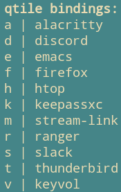

Lots of my personal scripts are now in bash, and not python (though they used to be be); I’ve become a real fan of pipes. As a somewhat basic example, this prints out my IP information, using curl to make a request and jq to parse the JSON.
curl -s ipinfo.io | jq -r 'to_entries[] | "\(.key): \(.value)"'
For personal scripts/one-liners, I find satisfaction in seeing how much I can do by just pipelining commands together. This next command sends me a notification, describing key-combinations which launch applications in qtile:
notify-send -t 10000 "qtile bindings:" "$(qtile-bindings --json | jq -r '[.[]|select(.modifier=="control, mod4")] | .[] | "\(.keysym) | \(.command)"' | sed -e "s/spawn('//" -e "s/')$//" -e "s/launch //" -e "s/-developer-edition//" -e "/qtile-notify-bindings/d")"
qtile bindings notificationOn top of that, I find it to be a fun process, tacking on commands to iteratively modify output.
I’ve been doing some research on other shells that exist, but I don’t think I’d want to use one of the non-POSIX compliant shells as my daily shell, since I don’t want to lean on an external syntax. If I was to pick one, it’d probably be elvish.
Oil seems like an interesting project, but its more about properly parsing the POSIX/bash AST, and making shell code more secure. The creator was previously working on Oil as an entirely new language, but they’ve stopped development on that for now.
The Oil External Resources is great for finding alternatives though. It has lots of peoples’ random extensions to shells.
Unless something like Oil comes about which has full POSIX support, but also a large enough community that shell customization is a thing, I don’t think I’m going to be replacing bash/zsh anytime soon.
Improving Pipelines
Disregarding portability, I still think there could be tools to make shell-like code better. bash isn’t great at processing text, so that’s why tools like awk/sed are used. Learning how IFS, arrays and loops (word/line splitting) work in bash does help a lot, but there’s still times where things feels like a hack (e.g. using curl and checking HTTP codes).
Currently, what I typically do is just write another tool/create an alias with 5 pipelines, with heavy use of sed/awk/xargs. That’s okay for me, but it isn’t readable, and it’s not great to debug/modify.
On a related note, curl | jq to get some basic interaction with JSON APIs is great, but at some point when you’re dealing with structured data and doing conditional logic based on it, trying to store individual list items in shell/bash variables gets to be really confusing. Associative arrays and arrays can work, but it gets to be very unreadable, and you have no type safety/error checking. I tend to fall back to python in situations like that.
So, at some point it may make sense to fall back onto (for a script)/call out to (for command line pipelines) other interpreted languages (like python/ruby), but that’s typically a noticeable drop in speed; I do value the speed of the shell (don’t think I’d use xonsh interactively, though it does look cool) and using minimal tools like curl/jq.
On one hand, if there was a nicer, extendible DSL like mario (but written in something faster than python, and didn’t require me to use pipx to run it from a virtual environment) which supported:
- processing text (with convenience functions for typical string operations)
- complex operations currently handled by
curl/jq, like making HTTP requests, parsing JSON/XML - maintain a shell like DSL/syntax, so you could construct pipelines and receive text from STDIN and do
map/filter/reduce across lines
… I could totally see myself using it for personal/throwaway scripts.
On the other hand, at some point that DSL turns into its own interpreted language, and you’re just re-writing ruby or python. (Often those tools are written in python as well, so your startup time is bad anyways).
For text manipulation, I can see myself replacing tr/sed/cut/awk with perl (see the perlre and perlrun man pages). That has the benefit of being portable and the startup time for perl is way better than python/ruby, so using it in pipelines is okay.
$ hyperfine -S sh 'perl' -S sh 'python' -S sh 'ruby'
....
'perl' ran
16.34 ± 10.22 times faster than 'python'
27.57 ± 15.38 times faster than 'ruby'
python in particular has tons of great libraries, so it can often be the solution
But otherwise, I’m in this middle ground of having to make a decision between funky looking bash pipelines and flawed data structures, and decreasing performance by calling out to a larger library in python/some other language.
I really like the brevity of pipes, so mario-like projects which approach the problem by creating a small DSL which acts on STDIN is what I want, but I can’t seem to find one that meets my criteria.
When writing throwaway commands, I often find myself doing some command | xargs -I "{}" sh -c "{}", or creating a bash script which reads from STDIN to a while loop - to do multiple subshells out to grep/sed against each line.
But! I’m not totally satisfied with that, and I wish there was a better way!
Possible Solutions
- Find something that works like
mario, but not in python and is extendible, or go through the arduous task of writing something myself in go/rust. - Hope for an interactive shell which is a superset of the POSIX standard while providing convenience functions like
elvish to become semi-popular.
The More I think about this, more likely me writing the tool isn’t going to be a thing
I think there’s a possibility to write something in a fast language, like rust to do this.
It would be similar to mario, but the ability to write ‘arbitrary’ functions wouldn’t be as possible. There’s an argument to be made to use perl instead, since that’s sort of what perl was made for, but aesthetically, I don’t like the syntax of perl, and doing more complicated stream processing like jq/awk/async curl-ing isn’t possible.
Things that this WOULDNT support, because good tools already exist:
- JSON:
jq and gron curl (though argument could be made that curl isn’t the best at this)
At that point, the custom tools you’re writing are replaceable by a couple jq/awk/perl pipelines, and it’d be more code to write some custom solution. Nice thing about mario is that you have access to the python stdlib, and common string manipulation functions, which is what the custom tool I write would offer over awk/jq. And nice string handling in the shell is needed, its often sort of hacky to fix strings in the shell. (though -z/-n) is nice
So. the solution for one liners is learn perl (which I have been doing), use gron/jq, all fallback to python when necessary.
yq (analogous to jq for yaml/XML)
pyp is a nice replacement for basic awk/sed tasks, instead of mario. It providing python syntax to pipes. Not portable, but its very light and good for quick scripts.
For CSV/TSV, q is sort of interesting, lets you run SQL like statements:
q "SELECT COUNT(*) FROM ./clicks_file.csv WHERE c3 > 32.3"
For larger pipelines, riko tries to model Yahoo! Pipes
babashka (native, fast starting clojure interpreter) could be nice, has a whole ecosystem for common problems and is meant for scripts. Is also functional, which is nice for pipes etc. Only thing that’s really stopping me from using it is not sure how to get it to work on termux, and if I was gonna invest time I’d want to be able to use all my scripts on my phone. could see here?
TODO: Is something to be said about writing a full shell-like lisp language, because shells are hacky and writing languages is fun, but that’s a whole nother project on its own :)
https://ngs-lang.org/ looks interesting: One way to think about NGS is bash plus data structures plus better syntax and error handling. It has lots of utility functions and is fast at dealing with streams of data. Looks like an awk for the modern times. Examples. Might be nice to use instead of a complex jq/gron/grep/cut. Agree with a lot of the problems laid out in this blog post. Of all the tools on this page, highest chance of me using this.
https://github.com/nushell/nushell? It doesn’t support functions/variables though, so doubt it could be used for now. The concept of pipes being tagged with types of data is very nice though. Is a bit similar to https://github.com/liljencrantz/crush/, which can convert between namespaces. This seems like a lot of work though. Since coreutils are essentially re-implemented/re-understood/encoded into language specific data, it means that the nice features you get from type tagging are placed behind days of work.
https://github.com/geophile/marcel seems quite nice for doing simple throwaway scripts in python-ish format. It allows me to reach out to python when needed (for functions/data structures), while still providing some custom operators (like | and a cleaner map) for working on streams of data. Relatively high chance of using this as well.
https://github.com/modernish/modernish seems cool. All written in sh, so ‘installing’ it/availability isn’t generally an issue. It ‘hardens’ lots of typical commands (e.g. wget/git/cut) and provides more modern syntax, like:
#! /usr/bin/env modernish
#! use safe -k
#! use sys/dir/countfiles
#! use var/arith/cmp
#! use var/loop
… so, you’re still writing sh, it just provides you with lots of nicer looking shells, and handles common pitfalls with looping/quoting/control flow.
I generally understand most of the pifalls in POSIX at this point, so switching to it would only be for slightly faster development experience, and perhaps more safety. Though, this would mean scripts aren’t as portable, and I have to learn its syntax.
Create a DSL?
If some task is done over and over in the shell, maybe I should instead write a DSL to handle that task? See Brian Kernighan lecture notes on designing languages, focusing on DSL usability.
Related to the JSON processing here; could possibly create some sort of script which generates jq commands to do more complicated things like filters/modifying nested attributes, since it gets to be quite verbose for longer pipelines